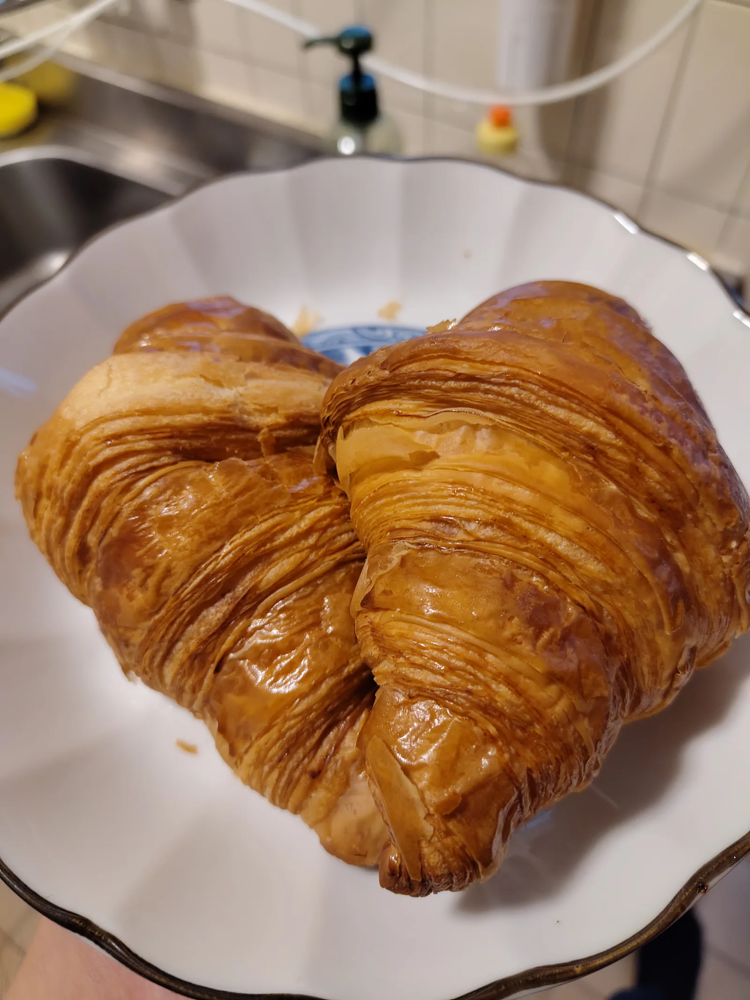

21 September 2026

It is too soon to say.
— Zhou Enlai (周恩来) on the consequences of the French revolution.
Happy new year! Today is the final day of the 234th year of the French revolutionary calendar (Quintidi 5 jour complémentaire). Tomorrow will then be Primidi 1 Vendémiaire an 235 de la Révolution. To celebrate this new year’s eve I scouted out a French bakery and bought some simple French croissants, as well as a baguette not pictured here.
Every single (European) foreigner I have met here has been of unanimous opinion — the Taiwanese do not know how to make good bread. The same is true of the mainlanders, although they add some foul tasting additive to all the bread I had there last year. But it seems that it is still possible to find quality European-style baked goods as long as one goes to a speciality location.